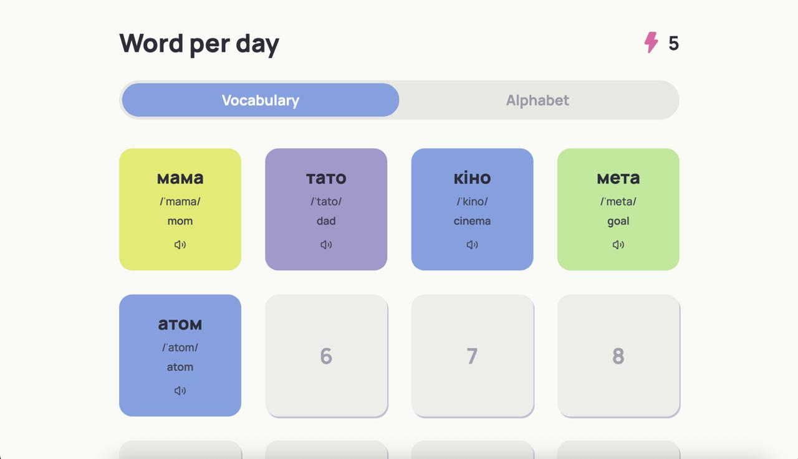
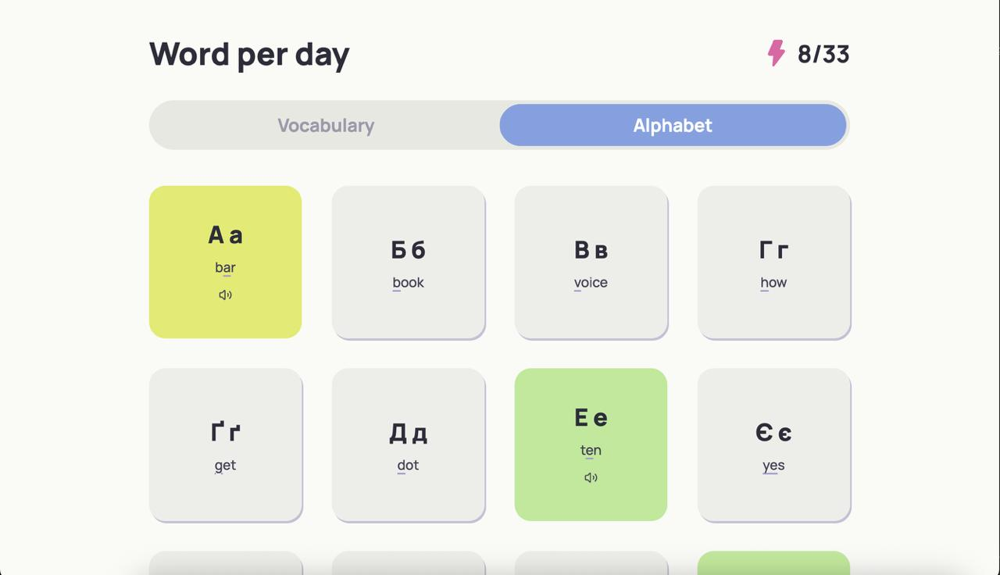

Case study in progress
I designed and built a human-to-human language-practice app, starting from alphabet flashcards and turning it into an invite-only chat product.
Replace with final Blab app screenshot or hero demo flow.
Concept, research, branding, PRD/spec, prototype, Flutter MVP, case study.
Invite-only language exchange with chat, translation support, and privacy-first scope.
Add testers, messages sent, words tapped, or strongest feedback quote.
The short version
Blab started from a learning theory: reading can make useful words feel less scary, especially in a language with a different alphabet.
The first prototype taught Ukrainian letters through practical words. Later, the idea moved through couples learning and gamified lessons before becoming a chat-first language-practice app.
The product judgment: real conversation creates stronger motivation than fake practice.


The insight
AI chat was tempting, but I cut it. When people write to a real person, they care more about being understood.
A potential user who pays for Duolingo and its AI feature said he puts more effort into meaningful, correct messages when he chats with a real person.
"Gamification can act like a layer of chocolate on the broccoli of learning: it makes the first bite more appealing, but it doesn't change the broccoli itself."
Research and prototyping
I tested competitor apps, created evaluation criteria with AI, and used Promova as the closest early benchmark while the product was still focused on Ukrainian learning.
Static screens were too slow for the amount of product change. HTML prototypes worked better as living specs: I could test the flow, rewrite the product logic, and keep moving.
Alphabet-first flashcards for useful Ukrainian words.
Couples learning, gamified lessons, mascots, and streaks.
Focused V1 on the human chat loop and translation support.
Product decisions
The strongest V1 is not the biggest product. I removed anything that distracted from the core loop: two people talking, learning, and staying comfortable.
AI companion chat, mascot, streaks, points, public discovery, iOS, push notifications, end-to-end encryption.
Invite-only access, chat, language choices, translation support, privacy toggles, Android-first Flutter MVP.
Confirm what is working, mocked, and planned for signup, invite links, live chat, subtitles, word tap, offline, and read receipts.
Build and feedback
I used AI to structure competitor criteria, PRD/specs, prototypes, and implementation support. The product decisions stayed mine.
Real feedback already changed the roadmap: Tamil speakers often text in Latin letters, so script choice may need to be explicit. LLM translation handles typos and context better than dictionary translation, but cost becomes a scaling tradeoff.
Add final Flutter screenshots: invite flow, chat, translation, tap-word meaning/pronunciation, and partner view.
What this case study should prove
I can take an idea from learning theory to product shape, prototype fast when the concept is changing, make hard scope cuts, and build the MVP myself.
Blab is not a long UX-process essay. It is a designer-builder case study about product judgment, speed, and ownership.